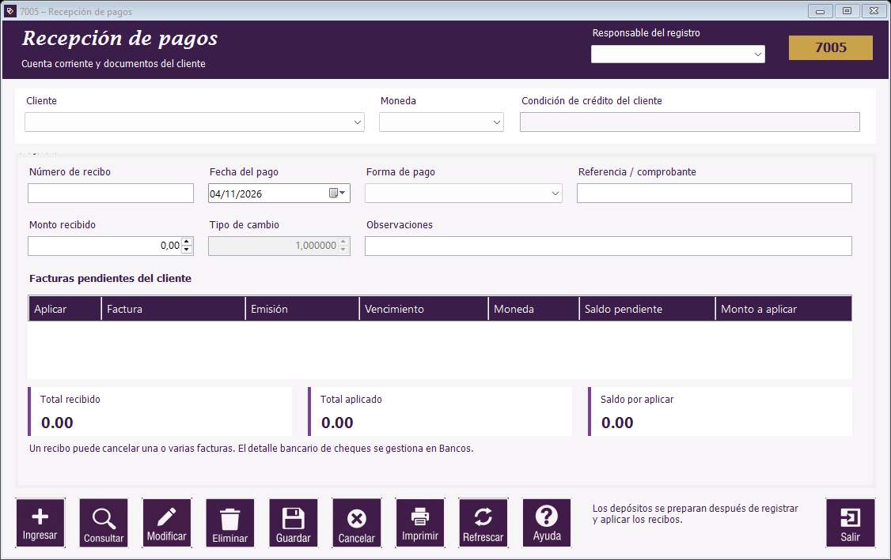

Guía de Movimientos de clientes | Estado de cuenta | Cargos y ajustes | Recepción de pagos | Depósitos a Bancos | Consulta de recibos | Botones de Movimientos de clientes | Mensajes frecuentes de Movimientos de clientes

Ubicación de los campos y del botón Ayuda en el formulario.
- Abra Pagos → Recepción de pagos y presione Ingresar.
- Seleccione cliente, moneda, responsable y fecha del pago.
- Seleccione la forma de pago e indique el monto recibido. Registre la referencia o comprobante cuando la forma de pago lo requiera.
- En las facturas pendientes marque las que pagará. Revise y ajuste el monto a aplicar en cada una.
- Compruebe que Total aplicado sea igual a Total recibido y que Saldo por aplicar sea cero.
- Presione Guardar. Conserve el número del recibo generado.
Sí puede hacer un pago parcial: si una factura debe Q100 y el cliente entrega Q50, escriba Q50 como monto recibido y Q50 como monto a aplicar. Quedarán Q50 pendientes en la factura.
Reglas del recibo
- Puede aplicar un recibo a una o varias facturas del mismo cliente y moneda.
- El importe aplicado a una factura no debe superar su saldo disponible.
- Esta etapa no permite dejar anticipos sin aplicar a facturas.
- Si selecciona una factura, revise el importe propuesto antes de guardar.
- Para modificar un recibo consultado se permite actualizar las observaciones. La anulación solicita un motivo y valida sus relaciones.
Manual de usuario · Movimientos de clientes · Aplicación de Ventas y cuentas por cobrar